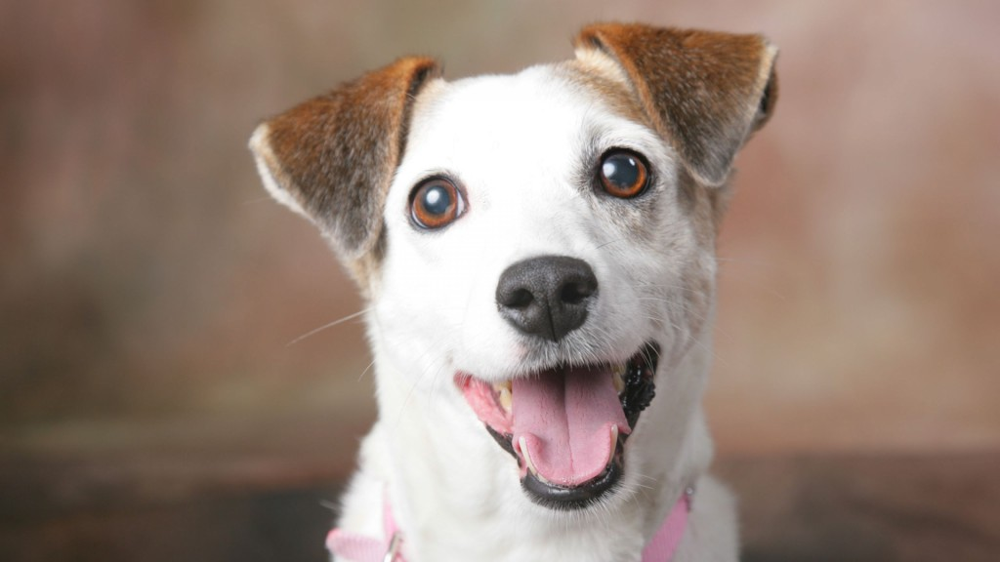

Sobre a Patas Pet
Somos pessoas apaixonadas pelos peludos de quatro patas, amamos eles de diversas formas e acreditamos que cuidar do bem estar desses pequenos deve ser algo primordial na vida de quem faz a escolha de ter um aumigo (ou um miaumigo).
Nossa missão: "Tornar mais acessível informações de cuidados com os pets".
Sabemos que o cuidado pet muitas vezes tem um custo elevado, que muitos não conseguem dar conta ou toda parte que envolve o cuidado emocional e fisco dos peludos acaba muitas vezes sendo menosprezado, decidimos criar a página Patas Pet com o intuito de levar informações sobre cuidados essenciais com nossos pets.
Onde estamos?
Nosso escritório está a uma pata de distância
O que você encontra por aqui?
- O meu pet pode comer isso?
- Atividades com os pets!
- Posso levar meu pet? (Lugares pet friendly em SP)
- Posso ajudar? (ONGs que cuidam de animais abandonados)
- Quero adotar! (Feiras de adoção pela cidade!)